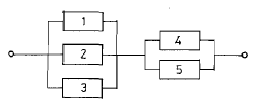
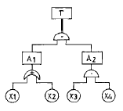
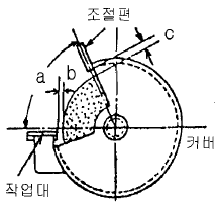

산업안전산업기사 (2006-03-05 기출문제)
1과목: 산업안전관리론
1. 안전조직에서 line system 의 단점 중 옳은 것은?
- 비경제적 조직체제이다.
- 안전관리부와 생산부간의 유기적 협조가 곤란하다.
- 안전조직원은 전문가이어야 한다.
- 대규모 기업에서 채택이 곤란하다.
(정답률: 70%)

2. 무재해 운동의 3원칙에 해당하지 않는 것은?
- 무의 원칙
- 직관의 원칙
- 참가의 원칙
- 선취의 원칙
(정답률: 85%)
3. 생산현장에서 작업에 종사하고 작업자가 작업을 함에 있어서 가장 안전하고 능률적으로 작업을 할수 있도록 작업내용 및 작업단위별로 사용설비, 작업자, 작업조건 및 작업방법 등에 관해 규정해 놓은 것을 무엇이라 하는가?
- 안전수칙
- 기술표준
- 작업지도서
- 표준안전 작업방법
(정답률: 82%)
4. 매슬로우(Maslow)의 욕구 5단계 중 안전의 욕구는 제 몇단계인가?
- 제5단계
- 제3단계
- 제2단계
- 제1단계
(정답률: 80%)
5. 교육의 4단계 기법이 올바르게 진행된 것은 어느 것인가?
- 제시-도입-적용-확인
- 확인-도입-제시-적용
- 도입-확인-적용-제시
- 도입-제시-적용-확인
(정답률: 61%)
6. 어떤 작업에 대한 평균에너지 값이 4.7kcal/분 일 경우 1시간의 총 작업시간 내에 포함시켜야만 하는 휴식 시간은 약 얼마인가? (단, 작업에 대한 평균 에너지가의 상한은 4kcal/분이다.)
- 3.86분
- 7.23분
- 10.11분
- 13.13분
(정답률: 35%)
7. 동기조사(motivation research)의 방법 중 가장 우수한 연구 방법은?
- 종업원의 요구 연구
- 관심의 표명 연구
- 작업태도 연구
- 사의를 표명한 이유 연구
(정답률: 71%)
8. 작업자의 직면하는 구체적인 설비조건에 대하여 조작 상의 위험성 및 잠재 위험성 등에 관하여 알제 하는 교육은 다음 중 어느 것에 해당하는가?
- 의식 교육
- 태도 교육
- 환경 교육
- 지식 교육
(정답률: 55%)
9. 태도의 관한 교육훈련의 효과 측정방법으로 가장 많이 쓰이는 방법은?
- 면접
- 노트의 관찰
- 평가시험
- 테스트
(정답률: 67%)
10. 다음 중 리더쉽 유형과 의사결정의 관계를 바르게 연결한 것은?
- 개방적리더-리더중심
- 개성적리더-종업원중심
- 민주적리더-전체집단중심
- 독재적리더-전체집단중심
(정답률: 80%)
11. 사고 장비 대책 제 5단계의 시정책의 적용에서 3E와 관계가 없는 것은?
- 교육(Education)
- 기술(Engineering)
- 재정(Economics)
- 독려(Enforcement)
(정답률: 71%)
12. 피로의 예방과 회복대책에 대한 설명이 아닌 것은?
- 작업부하를 크게할 것
- 정적 동작을 피할 것
- 작업속도를 적절하게 할 것
- 근로시간과 휴식을 적정하게 할 것
(정답률: 90%)
13. 다음 교육평가 방법 중 태도교육 평가방법으로 가장 부적당한 것은?
- 관찰
- 면접
- 질문
- 테스트
(정답률: 61%)
14. 다음 중 전이(transfer)의 조건이 아닌 것은?
- 학습의 정도
- 학습의 방법
- 학습의 평가
- 학습자의 태도
(정답률: 61%)
15. 상시 50인이 근로하는 공장에서 1일 8시간, 연근로 일수 300일로 1년간 3건의 부상자를 낸 공장의 강도율이 1.5였다면 총 휴업일수는 얼마인가?
- 180일
- 190일
- 208일
- 219일
(정답률: 32%)
16. 하인리히 재해발생 5단계 중 3단계는?
- 불안전행위 또는 불안전상태
- 사회적 환경 유전적 요소
- 인적 결함
- 사고
(정답률: 74%)
17. AE 와 ABE형의 안전모의 내수성 시험은 모체를 20~25℃의 수중에 24시간 담가놓은 후 대기중에 꺼내어 수분을 제거한 무게 증가율이 얼마일 때 합격하는가?
- 1%미만
- 2%이하
- 2.5%미만
- 3%이하
(정답률: 45%)
18. 안전 보건표지의 색채의 사용례에서 빨강으로 표시해야 하는 항목이 아닌 것은?
- 소화설비
- 위험경고
- 정지신호
- 유해행위의 금지
(정답률: 42%)
19. 재해 사고발생 비율에 대하여 버드(Frank E. Bird)는 1:10:30:600 비율 이론을 주장하였다. 여기서 “30”에 해당하는 것 다음 중 어느 것인가?
- 중상
- 경상
- 무상해, 무사고(위험순간)
- 무상해 사고(물적손실)
(정답률: 56%)
20. 어떤 사업장의 종합재해지수가 16.95이고 도수율이 20.83 이라면 강도율은 얼마인가?
- 20.45
- 15.92
- 13.79
- 10.54
(정답률: 58%)
2과목: 인간공학 및 시스템안전공학
21. 다음 중 체계의 기본기능에 해당하지 않는 것은?
- 감지
- 이동
- 정보보관
- 정보처리 및 의사결정
(정답률: 57%)
22. 다음 중 정보의 시각적제시(視覺的提示)가 적당한 경우는?
- 수용 위치에 소음이 많은 경우
- 정보를 나중에 다시 볼 필요가 없을 때
- 정보의 지시대로 즉시 행동해야 할 때
- 작동자의 직무상 여러곳으로 움직여야 할 때
(정답률: 72%)
23. 현재의 직무에 유사한 과업을 추가하여 단순 반복성을 없앰으로서 능률향상을 기하고자 하는 작업설계 방법은?
- 직무 윤택화
- 직무 충실
- 직무 순환
- 직무 확대
(정답률: 46%)
24. 다음 그림과 같은 시스템의 신뢰도는 약 얼마인가? (단, 부품1,2,3의 신뢰도는 0.5이고, 부품4,5의 신뢰도는 0.9 임)

- 0.62
- 0.74
- 0.87
- 0.99
(정답률: 51%)
25. 기계의 통제장치 형태 중 개폐에 의한 통제장치는?
- 노브(Knob)
- 토글 스위치(Toggle switch)
- 레버(Lever)
- 크랭크(Crank)
(정답률: 52%)
26. System 요소간의 link 중 인간 커뮤니케이션 Link에 해당 되지 않는 것은?
- 방향성 Link
- 통신계 Link
- 시각 Link
- 콘트롤 Link
(정답률: 59%)
27. 조종-표시장치 이동비율(Control-Display ratio)을 최적으로 설계할 경우에 고려할 사항과 거리가 먼 것은?
- 계기의 크기
- 운동성
- 공차
- 목축거리 및 조작시간
(정답률: 58%)
28. 다음 중 인간의 특성을 설명한 것 중 틀린 것은?
- 인간은 글씨보다 그림을 더 빨리 인식한다.
- 인간은 색깔보다 글씨를 더 빨리 인식한다.
- 인간의 단기기억시간은 매우 짧고 제한적이다.
- 인간은 5감 중 시각을 통하여 가장 많은 정보를 받아들인다.
(정답률: 70%)
29. 기억후 망각율이 가장 높은 기간은?
- 하루이내
- 하루이상 7일이내
- 7일이상 15일이내
- 15일이상 3C일이내
(정답률: 62%)
30. 기계가 정보의 입수와 통제하는 기능 중 계기나 신호 또는 감각에 의하여 행하는 통제기능은?
- 개폐에 의한 통제
- 반복에 의한 통제
- 반응에 의한 통제
- 양의 조절에 의한 통제
(정답률: 71%)
31. 다음 소음방지대책 중 가장 효과적인 방법은?
- 음원대책
- 능동제어
- 수음자대책
- 전파경로대책
(정답률: 61%)
32. 기계의 신뢰도가 고장율이 일정한 지수분포를 나타내며, 고장율이 0.04일때 이 기계가 10시간동안 만족스럽게 작동 할 확률은?
- 0.40
- 0.67
- 0.84
- 0.96
(정답률: 38%)
33. 그림의 결함수에서 컷셋을 구한 것이다. 올바른 것은?

- (X1, X2, X3)(X2, X3, X4)
- (X1, X3, X4)(X2, X3, X4)
- (X1, X2, X3)(X1, X3, X4)
- (X2, X3, X4)(X1, X2)
(정답률: 61%)
34. 다음 근로 능력 중 지식적 능력에 속하지 않는 것은?
- 이해력
- 판단력
- 표현력
- 감지력
(정답률: 58%)
35. 인간-기계의 계면(inter face)에서 조화성의 차원으로 고려될 수 없는 것은?
- 지적 조화성
- 신체적 조화성
- 통계적 조화성
- 감성적 조화성
(정답률: 48%)
36. 건구온도가 30℃, 습구온도가 27℃ 일때 사람들이 느끼는 불쾌감은?
- 모든 사람이 불쾌감을 느낀다.
- 일부분의 사람이 불쾌감을 느끼기 시작한다.
- 대부분 불쾌감을 느끼지 못한다.
- 일부분의 사람이 쾌적함을 느끼기 시작한다.
(정답률: 60%)
37. 위험성 평가(Risk Analysis)에서 위험의 정성적 확율 순위인 “거의 발생하지 않는(remote)"는 하루당 발생빈도(P)를 얼마로 보고 있는가?
- P > 10-8/day
- P > 10-6/day
- P > 10-5/day
- P > 10-4/day
(정답률: 34%)
38. 안전ㆍ보건표지의 색채ㆍ색도기준 및 용도에서 노랑 색채의 용도는?
- 지시
- 안내
- 경고
- 금지
(정답률: 76%)
39. 작업장의 소음을 통제하는 일반적인 방법과 거리가 먼 것은?
- 소음의 격리
- 소음원 통제
- 자동화 설비로 교체
- 차폐장치 및 흡음재 사용
(정답률: 77%)
40. 온도, 습도 및 공기의 유동이 인체에 미치는 열효과를 하나의 수치로 통합한 감각지수를 무엇이라 하는가?
- 보온율
- 열압박지수
- oxford 지수
- 실효온도
(정답률: 51%)
3과목: 기계위험방지기술
41. 다음 중 금형의 안전화 조치와 거리가 먼 것은?
- 펀치의 세장비가 맞지 않으면 길이를 짧게 조정한다.
- 강도 부족으로 파손되는 경우 충분한 강도를 갖는 재료로 교체한다.
- 열처리 불량으로 인한 파손을 막기위해 Quenching을 실시한다.
- 캠 및 기타 충격이 반복해서 가해지는 부분에는 완충장치를 한다.
(정답률: 56%)
42. 아세틸렌 용접장치에서 아세틸렌이 구리와 접촉시 생성되는 폭발설 물질은?
- 아세틸라이드
- 인화석회
- 에틸렌글리콜
- 에틸알코올
(정답률: 64%)
43. 다음 중 보안경이 필요없는 작업은?
- 밀링작업
- 선반작업
- 드릴링 작업
- 판금작업
(정답률: 68%)
44. 기계 대패의 작업시 가장 위험할 때는?
- 가공을 시작할 때
- 중간쯤 가공했을 때
- 거의 끝날 때
- 전부에 걸쳐서
(정답률: 66%)
45. 풀림방지용 사용되는 너트는?
- 나비너트
- 둥근너트
- 캡너트
- 홈붙이너트
(정답률: 52%)
46. 보일러의 저수위(이상감수)의 발생원인으로 가장 거리가 먼 것은?
- 분출 밸브 등의 누수
- 급수관의 이물질 축적
- 급수장치 및 수면계의 고장
- 연소장치의 고장
(정답률: 56%)
47. 와이어 로프로 중량물을 달아 올릴 때 다음 중 로프에 가장 힘이 작게 걸리는 각도는?
- 30°
- 60°
- 90°
- 120°
(정답률: 61%)
48. 컨베이어에 설치하는 안전장치 중 가장 거리가 먼 것은?
- 이탈 및 역주행 방지 장치
- 과부하방지장치
- 비상정지장치
- 건널다리
(정답률: 54%)
49. 역전방지(逆轉防止)에 사용되지 않은 것은?
- 라쳇트휘일
- 커플링
- 벤드식 브레이크
- 웜기어
(정답률: 52%)
50. 안전율(허용응력) 결정시 고려해야 할 사항으로서 가장 거리가 먼 것은?
- 재료의 품질
- 하중과 응력의 정확성
- 공작방법 및 정밀도
- 사용시의 상태
(정답률: 44%)
51. 직경 30mm 인 연강을 선반에서 절삭할 때 스핀들 회전수는? (단, 절삭속도는 20m/min이다.)
- 132rpm
- 212rpm
- 360rpm
- 418rpm
(정답률: 46%)
52. 안전계수 5인 체인의 최대 설계응력이 100kg 이라면 이 체인의 극한 강도는 얼마인가?
- 500kg
- 600kg
- 700kg
- 800kg
(정답률: 80%)
53. 동력전달장치의 하나인 벨트에서 벨트풀리 둘레의 중앙부를 약간 높게 만드는 이유는?
- 벨트가 벗겨지는 것을 막기 위하여
- 벨트 풀리의 마모를 고려하여
- 풀리의 강도를 크게 하기 위하여
- 벨트 걸기를 용이하게 하기 위하여
(정답률: 67%)
54. 다음 중 프레스 작업에 대한 위험성의 특징과 거리가 먼 것은?
- 위험부위에 노출되는 횟수가 많다.
- 오랜 작업시간과 많은 에너지가 필요하다.
- 금형의 제작, 설계시 안전의 고려가 미흡하다.
- 작업공정상 방호장치 설치가 곤란한 경우도 있다.
(정답률: 47%)
55. 클러치의 마찰면이 마멸되면 페달의 간격과의 관계는?
- 페달의 간격은 없다.
- 페달의 간격이 커진다.
- 페달의 간격과 관계없다.
- 페달의 간격이 적어진다.
(정답률: 64%)
56. 회전시험을 할 때, 미리 비파괴검사를 실시해야하는 고속 회전체는?
- 회전축의 중량이 1톤을 초과하고, 원주속도가 25m/s 이상인 것
- 회전축의 중량이 5톤을 초과하고, 원주속도가 25m/s 이상인 것
- 회전축의 중량이 1톤을 초과하고, 원주속도가 120m/s 이상인 것
- 회전축의 중량이 5톤을 초과하고, 원주속도가 120m/s 이상인 것
(정답률: 70%)
57. 탁상용 연삭기의 방호장치를 그림과 같이 설치할 때 a의 각도 및 b, c의 간격으로 옳은 것은?

- a : 65°이내, b : 3mm 이내, c : 5mm 이내
- a : 60°이내, b : 3mm 이내, c : 10mm 이내
- a : 90°이내, b : 5mm 이내, c : 5mm 이내
- a : 65°이내, b : 5mm 이내, c : 10mm 이내
(정답률: 56%)
58. 다음 중 보일러의 부식원인으로 가장 적당한 것은?
- 급수처리를 하지 않은 물을 사용할 때
- 수면계의 고장으로 드럼내의 물의 감소
- 압력계의 고장으로 기능이 불안전할 때
- 증기발생이 너무 고온일 때
(정답률: 53%)
59. 와이어로프의 절단하중이 1116kg이고, 한 줄로 물건을 매달고자 할 때 안전계수를 6으로 하면 얼마 이하의 물건을 매달 수 있는가?
- 186(kg)
- 190(kg)
- 195(kg)
- 200(kg)
(정답률: 78%)
60. 연삭숫돌 표기 WA-80-K-7-V에서 K가 나타내는 뜻은?
- 숫돌입자
- 입도
- 결합도
- 조직
(정답률: 52%)
4과목: 전기 및 화학설비위험방지기술
61. 다음 중 특수 화학설비란 섭씨 몇도 이상인 상태에서 운전되는 설비를 말하는가?
- 150℃
- 250℃
- 350℃
- 450℃
(정답률: 56%)
62. 교류아크 용접기의 재해방지를 위해 쓰이는 것은?
- 자동전격방지 장치
- 정전압 장치
- 정전류 장치
- 리미트 스위치
(정답률: 74%)
63. 누전화재라는 것을 입증하기 위한 요건이 아닌 것은?
- 누전점
- 발화점
- 접지점
- 접속점
(정답률: 53%)
64. 화학설비의 구조재료에는 다양한 재료가 사용되고 있다. 이때 이의 부식에 직접적으로 영향을 미치지 않는 것은?
- 온도
- 사용하는 화학물질의 종류
- 미생물
- 압력
(정답률: 51%)
65. 고압용 퓨즈는 정격전류의 몇배에 견뎌야 하는가?
- 1.2배
- 1.3배
- 1.6배
- 1.8배
(정답률: 62%)
66. 다음 제어기 중 잔류편차(off-set)는 없앨 수 없으나 제어 시간을 단축할 수 있는 제어기는?
- 비례제어기
- 비례미분제어기
- 비례적제어기
- 비례미분적분제어기
(정답률: 48%)
67. 연소한계에 영향을 가장 적게 미치는 것은?
- 온도
- 압력
- 이산화탄소
- 산소
(정답률: 64%)
68. 다음 중 과압에 의한 장치에 파손을 방지하기 위해 설치하는 방호설비가 아닌 것은?
- 안전밸브
- 파열판
- 폭압방산공
- 블로우다운 시스템
(정답률: 53%)
69. 전기설비의 화재에 사용되는 소화기의 소화제로 알맞는 것은?
- 산 및 알칼리
- 물거품
- 염화칼슘
- 탄산가스
(정답률: 64%)
70. 절연용 안전장구 중에서 전기용 고무장갑의 종류와 사용전압이 다른 것은?
- A종 - 300V 초과 600V 이하
- B종 - 600V 초과 3,500V 이하
- C종 - 3,500V 초과 7,000V 이하
- D종 - 7,000V 초과 10,000V 이하
(정답률: 51%)
71. 위험물에 대한 일반적 개념으로 올바르지 못한 것은?
- 자연계에 흔히 존재하는 물 또는 산소와의 반응이 용이하다.
- 화학적 구조 및 결합력이 불안정하다.
- 화학적 구조가 복잡한 고분자 물질이다.
- 반응속도가 급격히 진행된다.
(정답률: 64%)
72. 산화 에틸렌의 분해 폭발반응에 의해 생성되는 가스가 아닌 것은? (단, 연소가 일어나지 않는다.)
- 메탄(CH4)
- 일산화탄(CO)
- 에틸렌(C2H4)
- 이산화탄소(CO2)
(정답률: 59%)
73. 다음의 내용 중 단위조작(물리적공정)에 해당되는 것은?
- 중합
- 축합
- 산화
- 증류
(정답률: 53%)
74. 아세톤을 취급하는 작업자에 의한 정전기로 인한 화재폭발을 방지하기 위해서는 인체 대전 전위를 얼마 이하로 유지해야 하는가? (단, 인체의 정전용량은 100[pF], 아세톤의 최소착화 에너지는 1.15[mJ] 이다.)
- 2.3×106[V]
- 4.8×106[V]
- 4.8×103[V]
- 2.3×103[V]
(정답률: 31%)
75. 취급물질에 따라 증류하는 방법이 여러가지 있다. 다음 중 특수 증류방법이 아닌 것은?
- 감압 증류
- 추출 증류
- 공비 증류
- 기ㆍ액 증류
(정답률: 57%)
76. 주위의 온도가 정해진 비율 이상으로 상승할 때 작동하며, 온도상승이 완만한 화염이 감지에는 효과가 적은 단점이 있는 자동화재 탐지설비는?
- 정온식 감지기
- 보상식 감지기
- 차동식 감지기
- 복사 감지기
(정답률: 44%)
77. 정전기 발생량과 관련된 다음 내용 중 옳지 않은 것은?
- 두 물질간의 대전서열이 가까울수록 정전기의 발생량이 많다.
- 물질의 표면이 수분이나 기름 등에 오염되어 있으면 정전기 발생량이 많아진다.
- 접촉면적이 넓을수록, 접촉압력이 증가할수록 정전기 발생량이 많아진다.
- 분리속도가 빠를수록 정전기량이 많아진다.
(정답률: 48%)
78. 피뢰기의 제한전압이 700[KV]이고, 총격절연강도가 1,000[KV]라면, 보호여유도는?
- 12[%]
- 27[%]
- 39[%]
- 43[%]
(정답률: 31%)
79. 스프링클러의 폐쇄형헤드 중에서 부피팽창계수가 큰 알콜이나 에테르등을 이용하여 밸브캡을 개방시키는 방식을 무엇이라 하는가?
- 휴즈블링크형(Fusible Link)
- 유리벌브형(Glass Bulb)
- 케미솔더형(Chemical Solder)
- 메탈피스형(Metal Piece)
(정답률: 38%)
80. 인체가 충전전로 등에 접촉할 경우 전기저항은 여러가지 조건에 따라 다르나, 일반적으로 최악의 경우 인체저항은 몇[Ω]으로 설정하여야 하는가?
- 300
- 500
- 700
- 900
(정답률: 50%)
5과목: 건설안전기술
81. 거푸집동바리 서치시 안전기준으로 틀린 것은?
- 동바리로 강관을 사용하는 경우 높이 2m 이내마다 수평 연결재를 2개 방향으로 만들고 수평연결재의 변위를 방지한다.
- 동바리로 파이프서포트를 이어서 사용할 때는 3본까지로 제한한다.
- 동바리의 이음은 맞댄이음 또는 장부이음으로 한다.
- 강재와 강재와의 접속부 및 교차부는 볼트, 클램프 등 전용철물을 사용하여 단단히 연결한다.
(정답률: 53%)
82. 흙파기 공사용 기계에 관한 설명 중 틀린 것은?
- 불도저는 일반적으로 거리 60m 이하의 배토 작업에 사용된다.
- 크램셀은 좁은 곳의 수직파기를 할 때 사용한다.
- 파워쇼벨은 기계가 위치한 면보다 낮은 곳을 파낼 때 유용하다.
- 백호우는 5~6cm 정도를 파낼 때 편리하다.
(정답률: 60%)
83. 운반차에 물건을 실을 경우 무거운 물건의 중신 위치는 어디에 두는 것이 좋은가?
- 상부
- 하부
- 중간부
- 상관없다.
(정답률: 60%)
84. 추락시 로우프의 지지점에서 최하단까지의 거리(h)를 구하는 식으로 옳은 것은?
- h = 로프의 길이 + 신장
- h = 로프의 길이 + 신장/2
- h = 로프의 길이 + 로프의 늘어난 길이 + 신장
- h = 로프의 길이 + 로프의 늘어난 길이 + 신장/2
(정답률: 68%)
85. 하루의 평균기온이 4℃ 이하로 될 것이 예상되는 기상조건에서 낮에도 콘크리트가 동결의 우려가 있는 경우에 사용되는 콘크리트는?
- 고강도 콘크리트
- 경량 콘크리트
- 서중 콘크리트
- 한중 콘크리트
(정답률: 76%)
86. 보통 흙의 굴착공사에서 굴착길이가 5m, 굴착기초면의 폭이 5m인 경우 양단면 굴착을 할 때 상부 단면의 폭은? (단, 굴착구배는 1:1로 한다.)
- 10m
- 15m
- 20m
- 25m
(정답률: 57%)
87. 거푸집에 가해지는 콘크리트의 측압에 관한 다음 설명 중 틀린 것은?
- 슬럼프가 클수록 크다.
- 단면이 클수록 크다.
- 타설속도가 빠를수록 크다.
- 콘크리트 단위중량이 작을수록 크다.
(정답률: 63%)
88. 계단과 계단참은 얼마 이상의 하중에 견딜 수 있는 강도를 가진 구조로 설치하여야 하는가?
- 200kg/m2
- 300kg/m2
- 400kg/m2
- 500kg/m2
(정답률: 47%)
89. 양중기의 정기적인 자체검사 실시항목이 아닌 것은?
- 과부하방지장치, 권과방지장치 그 밖의 방호장치의 이상 유무
- 브레이크 및 클러치의 이상 유무
- 주행로의 상측 및 트롤리가 횡행하는 레일의 상태
- 와이어 로프 및 달기체인의 손상 유무
(정답률: 46%)
90. 철근콘크리트 공사에서 거푸집의 전용시 고려해야 할 사항으로 가장 관계가 적은 것은?
- 거푸집 존치기간
- 작업순서
- 시공기간
- 콘크리트의 워커빌리티
(정답률: 54%)
91. 달비계의 달기와어어로프는 지름의 감소가 공칭지름의 몇%를 초과할 경우에 사용할 수 없도록 규정되어 있는가?
- 5
- 7
- 9
- 10
(정답률: 60%)
92. 해체작업을 수행하기 전에 해체계획에 포함되어야 하는 사항이 아닌 것은?
- 부재 손상ㆍ변형ㆍ부식 등에 관한 조사계획서
- 해체 작업용 기계ㆍ기구 증의 작업계획서
- 해체의 방법 및 해체순서 도면
- 해체작업용 화약류 등의 사용계획서
(정답률: 57%)
93. 다음 중 옹벽 안정조건의 검토사항이 아닌 것은/
- 활동(sliding)에 대한 안전검토
- 전도(overtering)에 대한 안전검토
- 지반 지지력(settlement)에 대한 안전검토
- 보일링(boiling)에 대한 안전검토
(정답률: 60%)
94. 거푸집 해체 작업시의 안전수칙과 거리가 먼 것은?
- 거푸집동바리를 해체할 대는 작업책임자를 선임한다.
- 해체된 거푸집 재료를 올리거나 내릴 때는 달줄이나 달포대를 사용한다.
- 보 밑 또는 슬라브 거푸집을 할 때는 동시에 해체 하여야 한다.
- 거푸집의 해체가 곤란한 경우 구조체에 무리한 충격이나 지렛대 사용은 금하여야 한다.
(정답률: 71%)
95. 다음 안전시설비 등으로 사용되는 내역 중에서 추락방지용 안전시설비에 해당 되지 않는 것은?
- 안전난간 및 폭목
- 안전대 걸이설비
- 위험부위 보호덮개
- 방호선반
(정답률: 51%)
96. 강관비계 및 강관틀비계의 구조에 관한 설명중 틀린 것은?
- 강관비계에서 비계기둥의 장선방향 간격은 1.8m 이하로 할 것
- 비계기둥의 최고부로부터 31m 되는 지점 밑부분의 비계 기둥은 2본이 강관으로 묶어 세울 것
- 강관비계에서 비계기둥 간의 적재하중은 400kg을 초과하지 아니할 것
- 강관틀비계에서 주틀간에 교차가새를 설치하고 최상층 및 5층 이내마다 수평재를 설치할 것
(정답률: 33%)
97. 차량계 건설기계에 해당 되지 않은 것은?
- 불도저
- 항타기
- 파워쇼벨
- 타워크레인
(정답률: 44%)
98. 다음 중 일반적인 토석붕괴의 형태가 아닌 것은?
- 절토면의 붕괴
- 미끄러져 내림(sliding)
- 성토 법면의 붕괴
- 깊은 심층의 붕괴
(정답률: 50%)
99. 다음 중 철골공사시 도괴의 위험이 있어 강풍에 대한 안전여부를 확인해야 할 필요성이 가장 높은 경우는?
- 연면적당 철골량이 일반건물보다 많은 경우
- 기둥에 H형강을 사용하는 경우
- 이음부가 공장용접인 경우
- 호텔과 같이 단면구조가 현저한 차이가 있으며 높이가 20m 이상인 건물
(정답률: 68%)
100. 다음 중 유해ㆍ위험방지계획서 제출 대상인 것은?
- 지상높이가 20m 인 건축물의 해체공사
- 깊이 5.5m 인 굴착공사
- 최대 지간거리가 50m 인 교량건설공사
- 저수용량 1천만톤인 용수전용 댐
(정답률: 60%)